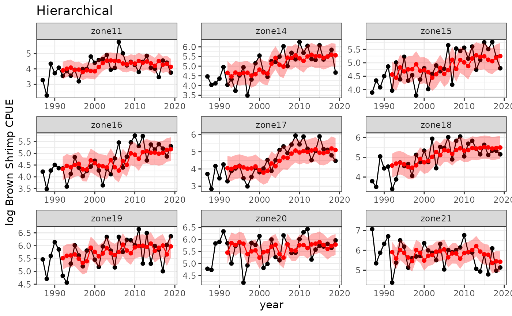
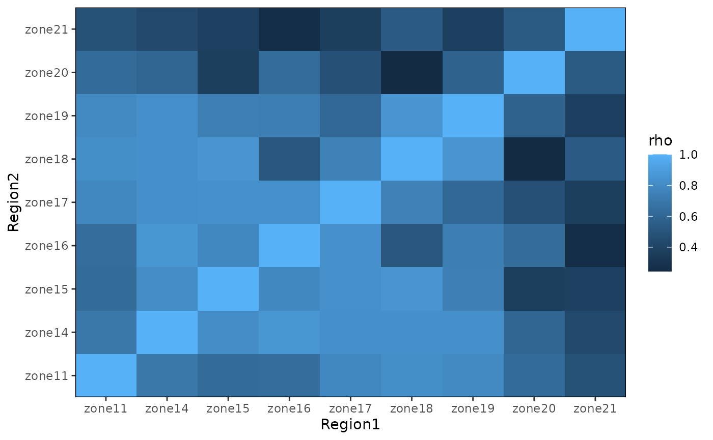

hierarchical.RmdMany ecological time series are short relative to the timescale of the system, which presents a major obstacle to the successful application of EDM: if the time series does not adequately cover the range of possible dynamics and make a sufficient number of ‘cycles’ around the attractor, it can be difficult for EDM to make reliable predictions.
One solution is to leverage multiple (potential short) time series from replicates with similar dynamics. These could be multiple replicates in an experiment, populations of the same species from multiple locations, different life history stages of the same species, or potentially even multiple species that are suspected to have similar dynamics. The most common case is likely to be replicate time series collected for multiple populations of the same species over space, so we’ll be referring to the replicates as ‘populations’ but these replicates can represent other things as well.
If you have time series data from multiple populations,
GPEDM includes several options for integrating the data
into a common model, which can potentially lead to better predictions
than models fit to each short time series independently. This approach
requires that the delay embedding maps are similar across populations
(usually a reasonable assumption for populations of the same species)
but not strongly synchronized (i.e. each series provides some
independent information).
The hyperparameter rho is the dynamic
correlation in the hierarchical GP model, indicating similarity of
dynamics across populations. In contrast to traditional correlation
metrics (e.g. Pearson correlation), which quantify the similarity of
population fluctuations over time (i.e. synchrony), the dynamic
correlation quantifies the similarity of population responses across
predictor space. The value of rho can be fixed to any value
from 0.0001 to 0.9999 using rhofixed, otherwise it is
estimated from the data. All populations are assumed to have the same
rho value relative to one another. Alternatively, one can
estimate pairwise values of rho between populations and
supply a fixed matrix of rho values
(rhomatrix) to use, rather than a single value.
Before fitting any models, you should think about how you want to
standardize the data. When you have multiple populations, scaling the
data within populations (scaling=local) vs. across
populations (scaling=global) can lead to very different
model fits and performance, so it is worth putting some thought into
this. Generally speaking, if the variable has the same units across
populations, you will probably want to use global scaling. If the
variable has different units, you will probably want to use local
scaling. However, you may have valid reasons to deviate from this, and
trying both might be worthwhile if in doubt. For instance, if the
species of interest has different carrying capacities in different
regions, local scaling of dynamics might make more sense, even if the
units are the same. If you have covariates, you might choose to use
different scalings for different variables. (Note
scaling=global and scaling=local apply to all
predictors, whether they’re lags, covariates, or lags of covariates, and
they all are scaled independently of each other.) To use a mix of
scalings, you need to scale the data yourself beforehand and set
scaling="none". You might get warnings that values are not
scaled properly, which is because generating lags elimiates some data,
so the mean and sd of each predictor may deviate somewhat from 0 and 1.
They should not be too far off though, so this warning can usually be
ignored. Note that if unspecified, scaling in fitGP
defaults to "global". See the documentation for
fitGP for more information about scaling.
For a single population, the maximum value of considered should not be much larger than the square root of the time series length. When combining data from multiple populations, you have more data at your disposal to reconstruct dynamics, and can use potentially higher values of than you could for a single population. However, cannot be greater than the shortest within-population time series length, so you may wish to constrain in some way to ensure sufficient training data across populations. Note than when using hierarchical models, all populations will use the same and .
When using multiple populations, there are a few additional things
you need to consider when evaluating model performance. The built-in
leave-one-out routine, predictmethod="loo", leaves out each
individual datapoint, so datapoints taken at the same time but in a
different location might be included in the training set. If this is of
concern, there is another routine, predictmethod="lto",
which leaves out all datapoints taken at the same time across all
locations. If there is only one population, these are obviously
equivalent. The routine predictmethod="sequential" leaves
out all future timepoints across all locations. If you decide to use a
training/test split, take care to split each population, not the stacked
series. Predictions cannot be made for populations which do not appear
in the training data.
In addition to comparing different hierarchical structures (described
below), you might also wish to compare the results from models fit to
each population separately. Note that as with all hierarchical models,
the hierarchical structure is a constraint that forces some similarity
of dynamics across populations. Populations in the same hierarchical
model will share the same embedding parameters
(
and
)
and the same inverse length scale parameters (this includes models with
rho=0). This means the hierarchical model is inherently
less flexible than if you were to fit separate models to each population
individually. If each population has a lot of data, the hierarchical
fit might be poorer than fitting a model to each population
individually, due to this decreased flexibility. On the flip side,
if each population does not have much data, or the data are very noisy,
the constraints and pooled information in a hierarchical model can lead
to better performance than individual fits.
Beware of local minima. If the relative performance of models seems
off, or better results are obtained using a fixed rho than
a fitted one, then the model might be getting stuck in a local minima.
One could try using different values of initpars.
It might also be that some populations have very different dynamics
than the others, and you might get better performance by spliting the
populations up into different hierarchical models. This situation might
also contribute to local minima. The pairwise rhomatrix
might be informative here.
In our example, we will use log-transformed catch-per-unit-effort (CPUE) time series for brown shrimp from 9 different regions (statistical zones) in the Gulf of Mexico. These are annual time series from the SEAMAP Summer Groundfish Trawl Survey, spanning 33 years. Plotting the time series, fluctuations in shrimp abundance in each region appear roughly similar, but have different means, so we decided to use local scaling in this case. Trying both scalings also showed that local scaling led to better performance.
In this example, we only use lags of CPUE, but we note that in the publication from which these data were taken (Tsai et al. 2022), better predictions were obtained by using environmental and fishery catch data as covariates. The results here deviate from the results in the paper because of the absence of these covariates.
When using the hierarchical models, the data must be in long format with a column for population identifier. Note that populations do not need to have the same number of observations, or overlapping time indices, as in this example.
E = 5
scaling = "local"
#get log abundance
data(shrimp)
shrimp$splog=log(shrimp$cpue)
#generate lags
splags = makelags(shrimp, y = "splog", pop = "zone", E = E, tau = 1, append = T)
# ggplot(shrimp) +
# facet_wrap(zone~., scales = "free") +
# geom_point(aes(y=cpue, x=year)) + geom_line(aes(y=cpue, x=year)) +
# theme_bw() + labs(y="Brown shrimp CPUE")
baseplot=ggplot(shrimp) +
facet_wrap(zone~., scales = "free") +
geom_point(aes(y=splog, x=year)) + geom_line(aes(y=splog, x=year)) +
theme_bw() + labs(y="log Brown Shrimp CPUE")
baseplotFor comparison, we will fit models to each population individually.
zones=unique(splags$zone)
spmodind<-spmodindout<-spmodindin<-list()
for(i in seq_along(zones)) {
dsub=subset(splags, zone==zones[i])
spmodind[[i]] = fitGP(dsub, y = "splog", x = paste0("splog_",1:E),
pop = "zone", time = "year", scaling = scaling, predictmethod = "lto")
spmodindin[[i]] = spmodind[[i]]$insampresults
spmodindout[[i]] = spmodind[[i]]$outsampresults
}
spmodindin=do.call(rbind, spmodindin)
spmodindout=do.call(rbind, spmodindout)
(R2indivin=getR2(spmodindin$obs,spmodindin$predmean))
#> [1] 0.8165698
(R2indivout=getR2(spmodindout$obs,spmodindout$predmean))
#> [1] 0.6121564
colnames(spmodindout)[2]="zone"
baseplot +
ggtitle("Individual") +
geom_point(data=spmodindout, aes(y=predmean, x=timestep), color="red") +
geom_line(data=spmodindout, aes(y=predmean, x=timestep), color="red") +
geom_ribbon(data=spmodindout,
aes(x=timestep, ymin=predmean-predsd,ymax=predmean+predsd),fill="red", alpha = 0.3)
#> Warning: Removed 45 rows containing missing values or values outside the scale range
#> (`geom_point()`).
#> Warning: Removed 5 rows containing missing values or values outside the scale range
#> (`geom_line()`).Including pop and setting rhofixed = 1 fits
a multi-population model in which the dynamics of each population are
forced to be identical. In other words, we assume that all delay vectors
come from the same attractor.
spmodrho1 = fitGP(splags, y = "splog", x = paste0("splog_",1:E),
pop = "zone", rhofixed = 1,
time = "year", scaling = scaling, predictmethod = "lto")
#> rhofixed must between 0.0001 and 0.9999, setting to 0.9999
summary(spmodrho1)
#> Number of predictors: 5
#> Length scale parameters:
#> predictor posteriormode
#> phi1 splog_1 0.06700
#> phi2 splog_2 0.00120
#> phi3 splog_3 0.02591
#> phi4 splog_4 0.10732
#> phi5 splog_5 0.02019
#> Process variance (ve): 0.6568221
#> Pointwise prior variance (sigma2): 0.5213629
#> Number of populations: 9
#> Dynamic correlation (rho): 0.9999
#> In-sample R-squared: 0.6027854
#> In-sample R-squared by population:
#> R2
#> zone11 0.18816256
#> zone14 0.51847339
#> zone15 0.25033220
#> zone16 0.44688137
#> zone17 0.60331705
#> zone18 0.52130162
#> zone19 0.21999381
#> zone20 -0.06904110
#> zone21 -0.09802088
#> Out-of-sample R-squared: 0.5555569
#> Out-of-sample R-squared by population:
#> R2
#> zone11 0.1335001
#> zone14 0.4542791
#> zone15 0.1573202
#> zone16 0.3737063
#> zone17 0.5488948
#> zone18 0.4557023
#> zone19 0.1193898
#> zone20 -0.1936677
#> zone21 -0.2132316
spout=spmodrho1$outsampresults
colnames(spout)[2]="zone"
baseplot +
ggtitle("Identical") +
geom_point(data=spout, aes(y=predmean, x=timestep), color="red") +
geom_line(data=spout, aes(y=predmean, x=timestep), color="red") +
geom_ribbon(data=spout,
aes(x=timestep, ymin=predmean-predsd,ymax=predmean+predsd),fill="red", alpha = 0.3)
#> Warning: Removed 45 rows containing missing values or values outside the scale range
#> (`geom_point()`).
#> Warning: Removed 5 rows containing missing values or values outside the scale range
#> (`geom_line()`).As with other EDM approaches (Simplex, S-map), the same results can
be obtained by simply concatenating the delay vectors for multiple
populations and fitting a standard model, as if the data all came from
one population (i.e. omit the pop argument even though
there are multiple populations). Note that automatic local scaling
cannot be done this way (because only one population is assumed), and
thus any local scaling must be done beforehand. You will also not get
fit stats for each population. To ensure there isn’t crossover between
the end of one time series and the beginning of another when
constructing the delay vectors, this also requires making lags
beforehand and including the pop argument in
makelags.
You can force the populations to have independent dynamics by setting
rhofixed = 0. Note that the populations in this case will
still share the same inverse length scale parameters, so due to this
decreased flexibility, the fit might be poorer than fitting a model to
each population independently.
spmodrho0 = fitGP(splags, y = "splog", x = paste0("splog_",1:E),
pop = "zone", rhofixed = 0,
time = "year", scaling = scaling, predictmethod = "lto")
#> rhofixed must between 0.0001 and 0.9999, setting to 0.0001
summary(spmodrho0)
#> Number of predictors: 5
#> Length scale parameters:
#> predictor posteriormode
#> phi1 splog_1 0.10242
#> phi2 splog_2 0.30842
#> phi3 splog_3 0.11504
#> phi4 splog_4 0.16779
#> phi5 splog_5 0.17300
#> Process variance (ve): 0.5720322
#> Pointwise prior variance (sigma2): 0.3471291
#> Number of populations: 9
#> Dynamic correlation (rho): 1e-04
#> In-sample R-squared: 0.7190166
#> In-sample R-squared by population:
#> R2
#> zone11 0.3566795
#> zone14 0.6152239
#> zone15 0.4512542
#> zone16 0.6093629
#> zone17 0.6780450
#> zone18 0.6445697
#> zone19 0.4516270
#> zone20 0.3520710
#> zone21 0.3915480
#> Out-of-sample R-squared: 0.5287102
#> Out-of-sample R-squared by population:
#> R2
#> zone11 -0.03022679
#> zone14 0.37914299
#> zone15 0.05440260
#> zone16 0.33830490
#> zone17 0.51555075
#> zone18 0.40588994
#> zone19 0.02939522
#> zone20 -0.10142623
#> zone21 -0.13070247To allow for information sharing across populations without assuming
the dynamics are identical, we can fit a hierarchical model with a free
rho parameter. Simply omit the rhofixed
argument, and rho will be estimated.
spmodrho = fitGP(splags, y = "splog", x = paste0("splog_",1:E),
pop = "zone",
time = "year", scaling = scaling, predictmethod = "lto")
summary(spmodrho)
#> Number of predictors: 5
#> Length scale parameters:
#> predictor posteriormode
#> phi1 splog_1 0.13002
#> phi2 splog_2 0.00000
#> phi3 splog_3 0.06131
#> phi4 splog_4 0.17783
#> phi5 splog_5 0.03767
#> Process variance (ve): 0.6467111
#> Pointwise prior variance (sigma2): 0.2658343
#> Number of populations: 9
#> Dynamic correlation (rho): 0.9169996
#> In-sample R-squared: 0.6193695
#> In-sample R-squared by population:
#> R2
#> zone11 0.20436617
#> zone14 0.53323690
#> zone15 0.25772910
#> zone16 0.46958275
#> zone17 0.63364240
#> zone18 0.53115126
#> zone19 0.26551303
#> zone20 -0.01321866
#> zone21 -0.03786475
#> Out-of-sample R-squared: 0.5532995
#> Out-of-sample R-squared by population:
#> R2
#> zone11 0.1029215
#> zone14 0.4470370
#> zone15 0.1252973
#> zone16 0.3732042
#> zone17 0.5673172
#> zone18 0.4386862
#> zone19 0.1240376
#> zone20 -0.1858376
#> zone21 -0.2057786
spout=spmodrho$outsampresults
colnames(spout)[2]="zone"
baseplot +
ggtitle("Hierarchical") +
geom_point(data=spout, aes(y=predmean, x=timestep), color="red") +
geom_line(data=spout, aes(y=predmean, x=timestep), color="red") +
geom_ribbon(data=spout,
aes(x=timestep, ymin=predmean-predsd,ymax=predmean+predsd),fill="red", alpha = 0.3)
#> Warning: Removed 45 rows containing missing values or values outside the scale range
#> (`geom_point()`).
#> Warning: Removed 5 rows containing missing values or values outside the scale range
#> (`geom_line()`).
Instead of using a single rho value, a matrix of fixed
pairwise rho values can be supplied using rhomatrix. In
this case, the single rho parameter will not be used and will revert to
the mode of its prior (~0.5). A pairwise rho matrix can be generated
using getrhomatrix, or you can create a custom one
(e.g. based on geographical distance). All getrhomatrix
does is fit a hierarchical model to each pair of populations and put the
resulting rho values in a matrix that can be passed to
fitGP. The rhomatrix itself can be informative about
dynamic similarity among populations, and reveal potential clustering
and spatial structure.
If you get an error that the matrix is not positive definite (which
can happen), you can use Matrix::nearPD() with
corr=TRUE to obtain a positive definite matrix close to
rhomatrix. The function GPEDM::posdef() is a
quick wrapper for this.
Rhomat = getrhomatrix(splags, y = "splog", x = paste0("splog_",1:E),
pop = "zone",
time = "year", scaling = scaling)
Rhomat
#> zone11 zone14 zone15 zone16 zone17 zone18 zone19
#> zone11 1.0000000 0.6976526 0.6244876 0.6422882 0.7827404 0.8218578 0.7974962
#> zone14 0.6976526 1.0000000 0.8102220 0.8576069 0.8259549 0.8253132 0.8244647
#> zone15 0.6244876 0.8102220 1.0000000 0.7847154 0.8313152 0.8528488 0.7430921
#> zone16 0.6422882 0.8576069 0.7847154 1.0000000 0.8312329 0.5110798 0.7345495
#> zone17 0.7827404 0.8259549 0.8313152 0.8312329 1.0000000 0.7535192 0.6125335
#> zone18 0.8218578 0.8253132 0.8528488 0.5110798 0.7535192 1.0000000 0.8547646
#> zone19 0.7974962 0.8244647 0.7430921 0.7345495 0.6125335 0.8547646 1.0000000
#> zone20 0.6253667 0.6009822 0.3716549 0.6315166 0.4731135 0.2439610 0.5750741
#> zone21 0.4844173 0.4282931 0.3838596 0.2655707 0.3700907 0.5366677 0.3783972
#> zone20 zone21
#> zone11 0.6253667 0.4844173
#> zone14 0.6009822 0.4282931
#> zone15 0.3716549 0.3838596
#> zone16 0.6315166 0.2655707
#> zone17 0.4731135 0.3700907
#> zone18 0.2439610 0.5366677
#> zone19 0.5750741 0.3783972
#> zone20 1.0000000 0.5239022
#> zone21 0.5239022 1.0000000
#plot the rho matrix
Rmatlong=as.data.frame(as.table(Rhomat)) #for plotting purposes only
colnames(Rmatlong)=c("Region1", "Region2", "rho")
ggplot(Rmatlong, aes(x=Region1, y=Region2, fill=rho)) +
geom_tile() +
scale_y_discrete(expand = c(0, 0)) +
scale_x_discrete(expand = c(0, 0)) +
theme(panel.background = element_rect(fill="gray"),
panel.border = element_rect(color="black", fill="transparent"))
Rhomatpd=posdef(Rhomat)
spmodrhomat = fitGP(splags, y = "splog", x = paste0("splog_",1:E),
pop = "zone", rhomatrix = Rhomatpd,
time = "year", scaling = scaling, predictmethod = "lto")
summary(spmodrhomat)
#> Number of predictors: 5
#> Length scale parameters:
#> predictor posteriormode
#> phi1 splog_1 0.20552
#> phi2 splog_2 0.01286
#> phi3 splog_3 0.06446
#> phi4 splog_4 0.22136
#> phi5 splog_5 0.07911
#> Process variance (ve): 0.5900952
#> Pointwise prior variance (sigma2): 0.2670027
#> Number of populations: 9
#> Dynamic correlation (rho): rhomatrix
#> In-sample R-squared: 0.6712945
#> In-sample R-squared by population:
#> R2
#> zone11 0.2387228
#> zone14 0.5907084
#> zone15 0.3096061
#> zone16 0.5500649
#> zone17 0.6919789
#> zone18 0.6146147
#> zone19 0.3616301
#> zone20 0.1190174
#> zone21 0.1880890
#> Out-of-sample R-squared: 0.5642167
#> Out-of-sample R-squared by population:
#> R2
#> zone11 0.05478630
#> zone14 0.47564667
#> zone15 0.09787071
#> zone16 0.39897111
#> zone17 0.60659794
#> zone18 0.47556592
#> zone19 0.14990686
#> zone20 -0.20415259
#> zone21 -0.15334904
spout=spmodrhomat$outsampresults
colnames(spout)[2]="zone"
baseplot +
ggtitle("Hierarchical Matrix") +
geom_point(data=spout, aes(y=predmean, x=timestep), color="red") +
geom_line(data=spout, aes(y=predmean, x=timestep), color="red") +
geom_ribbon(data=spout,
aes(x=timestep, ymin=predmean-predsd,ymax=predmean+predsd),fill="red", alpha = 0.3)
#> Warning: Removed 45 rows containing missing values or values outside the scale range
#> (`geom_point()`).
#> Warning: Removed 5 rows containing missing values or values outside the scale range
#> (`geom_line()`).
comparison=data.frame(Model=c("Individual", "Independent", "Identical", "Single rho", "Rho matrix"),
InSampR2=c(R2indivin,
spmodrho0$insampfitstats["R2"],
spmodrho1$insampfitstats["R2"],
spmodrho$insampfitstats["R2"],
spmodrhomat$insampfitstats["R2"]),
OutSampR2=c(R2indivout,
spmodrho0$outsampfitstats["R2"],
spmodrho1$outsampfitstats["R2"],
spmodrho$outsampfitstats["R2"],
spmodrhomat$outsampfitstats["R2"]))
comparison
#> Model InSampR2 OutSampR2
#> 1 Individual 0.8165698 0.6121564
#> 2 Independent 0.7190166 0.5287102
#> 3 Identical 0.6027854 0.5555569
#> 4 Single rho 0.6193695 0.5532995
#> 5 Rho matrix 0.6712945 0.5642167
popcomparison=data.frame(Individual=sapply(spmodind, function(x) x$outsampfitstats["R2"]),
Independent=spmodrho0$outsampfitstatspop$R2pop,
Identical=spmodrho1$outsampfitstatspop$R2pop,
Single_rho=spmodrho$outsampfitstatspop$R2pop,
Rho_matrix=spmodrhomat$outsampfitstatspop$R2pop)
popcomparison
#> Individual Independent Identical Single_rho Rho_matrix
#> zone11 0.087608203 -0.03022679 0.1335001 0.1029215 0.05478630
#> zone14 0.412489699 0.37914299 0.4542791 0.4470370 0.47564667
#> zone15 0.193900661 0.05440260 0.1573202 0.1252973 0.09787071
#> zone16 0.479309505 0.33830490 0.3737063 0.3732042 0.39897111
#> zone17 0.605466183 0.51555075 0.5488948 0.5673172 0.60659794
#> zone18 0.603964931 0.40588994 0.4557023 0.4386862 0.47556592
#> zone19 0.341658106 0.02939522 0.1193898 0.1240376 0.14990686
#> zone20 0.086590821 -0.10142623 -0.1936677 -0.1858376 -0.20415259
#> zone21 0.006953901 -0.13070247 -0.2132316 -0.2057786 -0.15334904Munch, S. B., Poynor, V., and Arriaza, J. L. 2017. Circumventing structural uncertainty: a Bayesian perspective on nonlinear forecasting for ecology. Ecological Complexity, 32:134.
Rogers, T. L., and Munch, S. B. 2020. Hidden similarities in the dynamics of a weakly synchronous marine metapopulation. Proceedings in the National Academy of Science, 117(1), 479–485.
Tsai, C. H., Munch, S. B., Masi, M. D., and Pollack, A. G. 2022. Predicting nonlinear dynamics of short-lived penaeid shrimp species in the Gulf of Mexico. Canadian Journal of Fisheries and Aquatic Sciences.